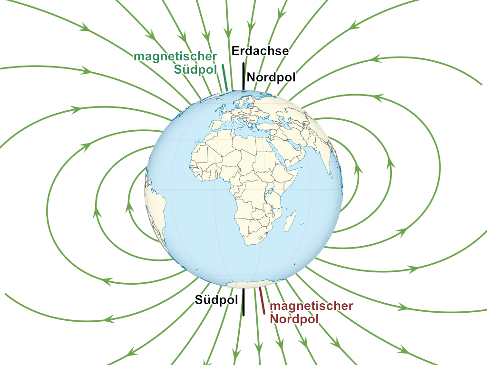
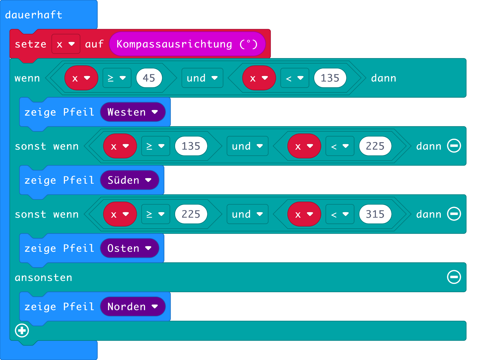

Kompass
Das sich eine magnetische Nadel in Richtung Norden ausrichtet, ist schon seit der Antike bekannt. Der Grund, dass ein Kompass nach Norden zeigt, liegt im Magnetfeld der Erde. Die Kompassnadel richtet sich parallel zu den Magnetfeldlinien aus. Diese zeigen ungefähr in Richtung des geografischen Nordpols.

Abb. 1 – Kompass (Bild: pexels.com)
Im Gegensatz zu anderen Planeten, hat die Erde hat ein schönes Magnetfeld mit einem magnetischen Nordpol in der Antarktis (geografisch Süden) und einem magnetischen Südpol in der Arktis (geografisch Norden). Das Magnetfeld ist jedoch nicht sehr stabil. Ungefähr alle 250'000 Jahre polt es sich um. Für eine grob Einschätzung der Himmelsrichtung reicht ein Kompass. Da das Erdmagnetfeld etwas verzerrt ist, zeigen Kompasse nicht überall auf der Erde in Richtung des geografischen Nordpols sondern etwas daneben. Hier in der Schweiz beträgt diese Missweisung ungefährt 2 Grad. Beachte, dass Eisenteile in der Nähe des Kompass diesen stören können.

Abb. 2 – Erdmagnetfeld (Bild: TUBS, Geek3 / Wikimedia Commons)
Der micro:bit verfügt über einen Sensor, der die Stärke und Richtung des Magnetfeldes messen kann. Dieser Sensor arbeitet mit dem sogenannten Hall-Effekt. Wenn du mehr darüber wissen möchtest, schau dir das Video im Unterkapitel Links dazu an. Übernimm nun das Programm aus Abb. 3. Es zeigt einen Pfeil an, welcher in Richtung Norden zeigt. Der Befehl Kompassausrichtung findest du im Bereich Eingabe.

Abb. 3 – Programm für einen Kompass
Es kann sein, dass nach dem Herunterladen etwas seltsames passiert: statt, dass der Kompass die Himmelsrichtung anzeigt, erscheint auf dem Display die Mitteilung TILT TO FILL SCREEN. Kippe nun den Microbit, bis alle LED eingeschaltet sind. Dieser Vorgang ist nötig, um den Kompass zu kalibrieren (korrekt einzustellen). Erst danach läuft das eigentliche Programm.
Gehe nun nach draussen und überprüfe, dass der Kompass funktioniert und immer nach Norden zeigt.
Aufgaben
- Erweitere das Programm so, dass auch die Richtungen NW, NO, SW und SO angezeigt werden.
- Richte den micro:bit in Richtung Norden aus und miss das Magnetfeld in alle drei Raumrichtungen. Verwende dazu den Befehl Magnetkraft (μT) unter ... more. Die Bezeichnung Magnetkraft ist falsch. Was hier gemessen wird ist die sogenannte magnetische Flussdichte. Sie wird in der Einheit Tesla (T) angegeben.
- Sende die Messwerte von Magnetkraft (μT) Stärke an den PC und lass dir diese im Diagramm anzeigen. Lege dann den micro:bit auf den Tisch und bringe Eisen in die Nähe des micro:bits. Wie reagiert der Sensor? Kannst du einen Eisendetektor erstellen?
Links
Autor: T. Jenni
Letzte Änderung: 14. Mai 2021

Einsteigerkurs für den BBC micro:bit von T. Jenni, et al. ist lizenziert unter einer Creative Commons Namensnennung - Nicht-kommerziell - Weitergabe unter gleichen Bedingungen 4.0 International Lizenz.